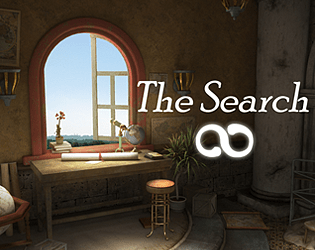

|  | |
| Playtime | Not Played |
| Last Activity | Never |
| Added | 12/31/2023 8:07:57 |
| Modified | 12/31/2023 8:32:24 |
| Completion Status | Not Played |
| Library | Itch.io |
| Source | itch.io |
| Platform | PC (Windows) |
| Release Date | 4/10/2017 |
| Community Score | 60 |
| Critic Score | |
| User Score | |
| Genre | Adventure Indie Point-and-click Puzzle |
| Developer | Jason Godbey |
| Publisher | Jason Godbey |
| Feature | Single Player |
| Links | Steam Official Itch Twitch |
| Tag | |
Embark on a journey of discovery and inspiration in The Search - a story-driven puzzle-adventure set in a mysterious world where art comes to life!
In an unknown world, you'll search for clues about the nature of this place, as well as your own past. Guided only by the letters of a mysterious stranger, you'll find that this universe works differently from our own. It's a world in which obstacles can be overcome by your own creativity - and where art comes to life to create tears in the fabric of reality.
Who wrote the letters that guide you? What is the nature of this surreal, enchanted universe? And why were you chosen to take this journey?
Key features:
- A short, story-driven puzzle-adventure
- Uncover clues and solve inventive puzzles
- Gorgeous 3D artwork and a haunting soundtrack
- Voice acting from Cissy Jones (Firewatch, Life Is Strange)
Language options include:
English (Menus, Voice Over, and Subtitles)
Russian (Menus & Subtitles)
German (Menus & Subtitles)
Italian (Menus & Subtitles)
Spanish (Menus & Subtitles)
French (Menus & Subtitles)
Portuguese (Brazil) (Menus & Subtitles)
Reviews for The Search
Jay Is Games - "...as a puzzle game and a solo-venture at that, there is an incredible and impressive amount of love and polish in every moment. I was surprised, repeatedly, by several clever twists and turns...I could easily and gladly exist in The Search's liminality for hours longer, in its lovingly designed and beautifully rendered levels, its gorgeous, thoughtful soundtrack, and curious, otherworldly atmosphere."
Doctor's of Gaming - "The game is short, about an hour or two. But it was enough to impress me. It knows what it is, and executes that well. Pleasing visuals, good music/sound, an intriguing setting/story and fresh puzzles round out this surprising little gem."
GameRaven - “Big experiences can sometimes come in small packages and the time
that you spend with The Search will be one that you will reflect on for
days after you step away from it.”